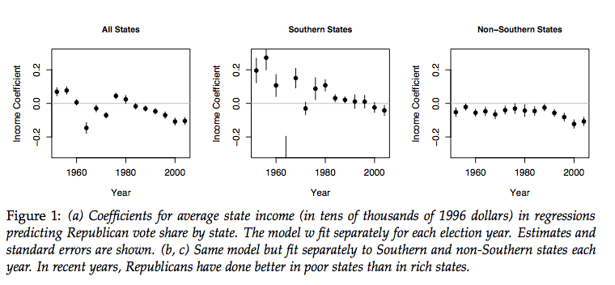
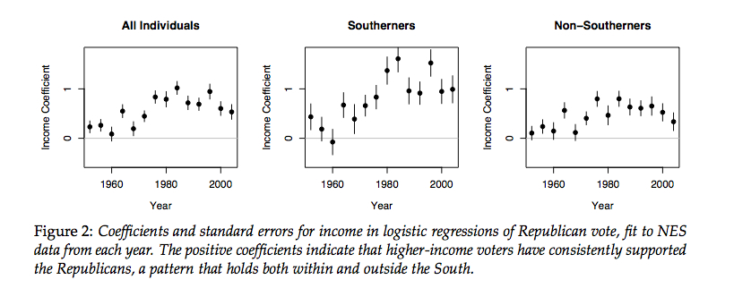
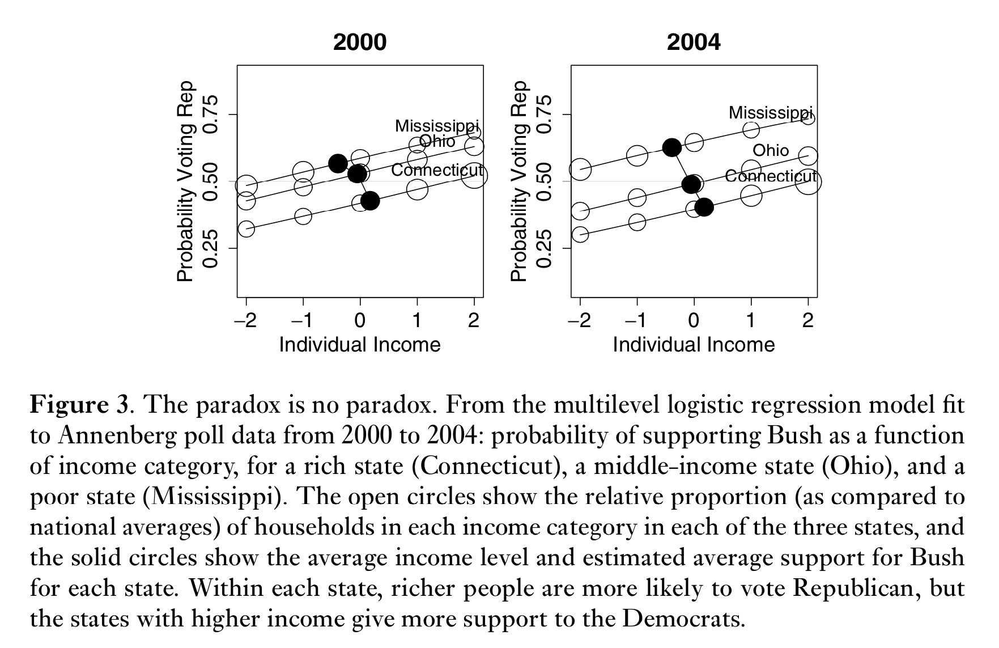

Ecological studies are a class of study designs, not a single design. The distinguishing feature of ecological study has the unit of analysis as an aggregate (e.g., country, county, school, hospital, census block), rather than the individual.
Ecological studies include several designs:
Group-randomized trial: Usually a randomized ecological study is not referred to as “ecological,” but the unit of analysis is at the group level.
Cohort, cross-sectional, longitudinal.
12.0.1 When ecological studies are useful
Ecological studies are useful when aggregate information is most readily available, especially for preliminary analysis before proceeding to an individual-level study.
Killias study used International Crime Victimization Study (ICVS) data about gun ownership to estimate prevalence of gun ownership, and compared with homicide rate. Homicide is rare, and gun ownership of each victim is unknown.
Gun studies have used individual-level data and found that individuals are at greater risk if there’s a gun in the home, guns are often used in intimate partner violence, etc., but first step was finding higher rates of violent crime in places with more guns.
Other examples where ecological study was the first step: smoking and lung cancer, poverty and pellagra, fluoride and cavities.
Ecological studues are also useful when an exposure occurs at the population level: e.g., evaluating the impacts of policies or other geographic-level qualities on disease.
Laws in a particular country or state
Hospital policy towards premature infants (as in chapter 1).
To advocate policies: e.g., Swiss cantons that require gun storage in the central depots might have lower rates of accidental gun injuries.
Ecological studues are also useful when exposure has high measurement error, so aggregate measures are more accurate than individual measures.
12.0.2 Measurements in ecological studies
• Aggregate measures (contextual factors): summary of many individual measures, e.g., % population with syphilis. • Inherently population-level measures (integral measures): e.g., population density, GDP. Multi-level studies use contextual factors and individual-level factors.
• E.g., Individuals within regions. • Multi-level analysis captures the variation both across regions and across individuals.
12.0.3 How to analyze ecological and multi-level studies
If the data is continuous, start by plotting the data. Plots are particularly useful because the smaller number of units and lower measurement errors makes it more likely that you’ll see a trend. Nearly all data analysis is with a computer.
12.1 Ecological fallacy
Inferences about individual behavior cannot be made from aggregate statistics. When people try to make such inferences anyhow, they have committed the ecological fallacy.
Example: Mark Bittman published an oped in the NYT (“It’s the Sugar, Folks” Feb 27, 2013) with the ecological fallacy, and also inappropriate attribution of causality. http://opinionator.blogs.nytimes.com/2013/02/27/its-the-sugar-folks They had to issue the correction: “Correction: March 6, 2013 Mark Bittman’s column on Thursday incorrectly described findings from a recent epidemiological study of the relationship of sugar consumption to diabetes. The study found that increased sugar in a population’s food supply was linked to higher rates of diabetes — independent of obesity rates — but stopped short of stating that sugar caused diabetes. It did not find that”obesity doesn’t cause diabetes: sugar does.” Obesity is, in fact, a major risk factor for Type 2 diabetes, as the study noted.”
12.1.1 Cross-level bias
Cross-level bias is one reason to avoid committing the ecological fallacy.
The following plots are an example of cross-level bias, which shows why that extra structure is useful for data analysis, both conceptually and statistically.
library(mosaic)
Registered S3 method overwritten by 'mosaic':
method from
fortify.SpatialPolygonsDataFrame ggplot2
The 'mosaic' package masks several functions from core packages in order to add
additional features. The original behavior of these functions should not be affected by this.
Attaching package: 'mosaic'
The following objects are masked from 'package:dplyr':
count, do, tally
The following object is masked from 'package:Matrix':
mean
The following object is masked from 'package:ggplot2':
stat
The following objects are masked from 'package:stats':
binom.test, cor, cor.test, cov, fivenum, IQR, median, prop.test,
quantile, sd, t.test, var
The following objects are masked from 'package:base':
max, mean, min, prod, range, sample, sum
Rich states are more likely to vote Democratic, but within each state, the chances that an individual votes Republican increases with their income.



Source: Andrew Gelman, Boris Shor, Joseph Bafumi, David Park, “Rich state, poor state, red state, blue state: What’s the matter with Connecticut?” Popularized in the book Red State, Blue State, Rich State, Poor State: Why Americans Vote the Way They Do. Subsequent analysis in Avi Feller, Andrew Gelman, Boris Shor, “Red State/Blue State Divisions in the 2012 Presidential Election.” The Forum 2012; 10(4): 127–131. DOI 10.1515/forum-2013-0014. The text discusses indications that there is a cross-level bias, but often these relationships are found empirically and explanations come after the fact.
12.1.2 Flaws of ecological studies
Ecological fallacy.
Geographical units may not be the most logical division: e.g., metro areas, especially east of the Mississippi, may go across states: DC and NY metro areas both include 3 states. Some exposures are spatial. Spatial data analysis might be more useful than considering ecological units.
12.2 Application to ecological datasets
The Gapminder dataset has data from (up to) 195 countries that can be used to conduct an analysis using a ecological research design. The codebook is available on the course website and lists each variable and the number of countries that each variable is available for. Notice that some variables are only available for a small number of countries, so they are not good candidates for variables to use, unless you are okay having only 20 datapoints.
Load the mosaic library and the Gapminder dataset. Notice that the variable names in R are all small letters, but the codebook has capital letters in the variable names.
You can use the provided file or download yourself here: https://www.gapminder.org/data/
Change in log child death rate if log(GDP) increases by one unit
p-value for log.gdp coef
Is coefficient on log.gdp different from 0?
R-squared
Percentage of variation in log child death rate explained by log(GDP)
F-statistic and p-value
Is the overall model significant?
I.e., does log(GDP) explain log child death rate?
Because we took the log of both the predictor and outcome variables, the interpretation of these coefficients are different than for regressions where we do not transform the variables.
A $1 increase in per capita log(GDP) predicts 0.76 unit reduction in log child deaths: that is, if GDP increases by 1%, then child deaths decrease by 0.76%.
Now we can think about other variables — are there any variables that may confound the relationship between per-capita GDP and childhood mortality, or is this model sufficient?
12.3 Exercise
Work with a small group of classmates to analyze the Gapminder data. Download the Gapminder codebook from the course website on Dropbox. Load the data (and the mosaic package) using the above commands. Use the codebook to formuate a research question that you could answer with the Gapminder dataset is neither totally trivial/obvious nor totally arbitrary. The outcome variable should be a continuous variable rather than binary or categorical so that you can use linear regression tools.
Identify the research question, the outcome and predictor variables, and potential confounders.
Do some basic plots with the outcome and predictor variables to explore the data.
Perform a regression with one or more predictors.
Prepare a 10 minute informal presentation to discuss your research question, your initial findings, and potential confounders. Make sure to address whether you were surprised by your findings or whether you just found what you expected.